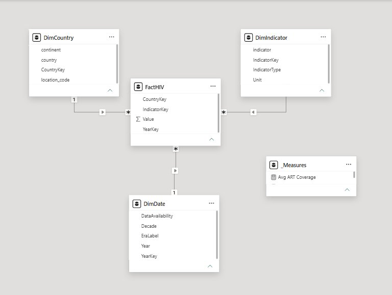
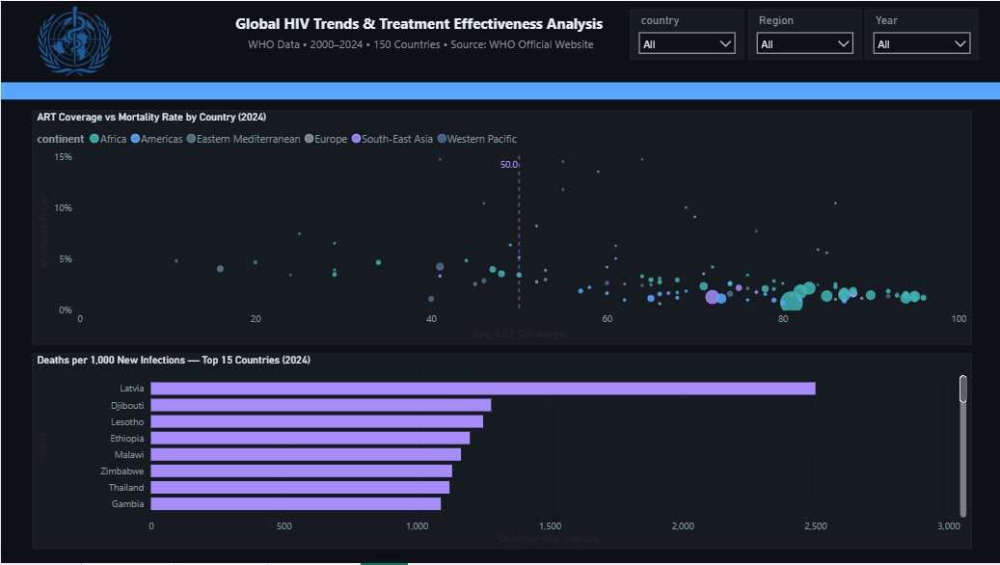
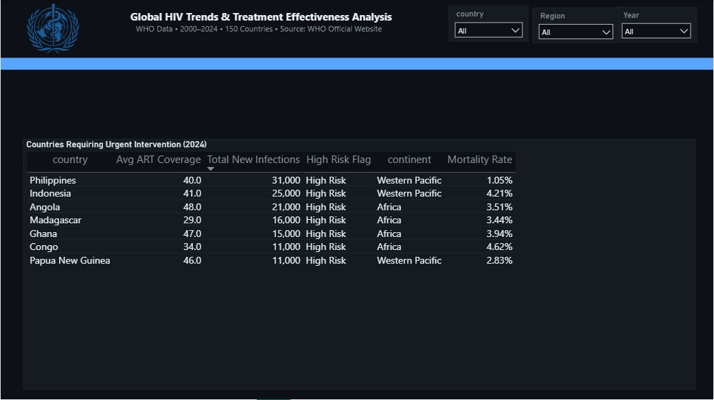

A 25-year, 150-country Power BI analysis built to answer one question global health
stakeholders couldn't answer from raw numbers alone: is HIV treatment actually working,
or are we just measuring a slower decline?
Tools
Power BI, Power Query, DAX
Scope
150 countries, 2000–2024
Records
9,763
Source
WHO official data
The business problem
Between 2000 and 2024, the number of people living with HIV worldwide rose from 22
million to 35.2 million — while global health messaging simultaneously described the
epidemic as improving. Both statements are true, and that's exactly the problem: without
a model connecting infection rates, treatment coverage, and mortality, stakeholders had
no way to tell whether rising case counts meant the epidemic was worsening, or whether
more people were simply surviving longer under treatment. Resource allocation was also
untargeted — there was no systematic way to identify which specific countries combined
high infection burden with low treatment access.
The approach
I modelled the data as a star schema — one fact table against three dimension tables
(country, indicator, date) — so every measure stays accurate regardless of which filters
are applied, and new indicators could be added later without rebuilding the model.

The star schema behind every measure on the report.
On top of that model I wrote ten DAX measures — mortality rate, average ART coverage,
year-on-year change, and deaths per 1,000 new infections among them — and built a
three-page report: a global overview, a correlation analysis, and a ranked list of
countries needing urgent intervention.
Page 1 — the 2024 global picture.
The insight
The headline finding: rising PLHIV (people living with HIV) numbers are a
survival metric, not a sign the epidemic is worsening. ART coverage rose from
6.8% to 66.4% over the same period that mortality fell from 7.8% to 1.49% — people are
surviving, not disappearing from the count.
Worth watching
HIV deaths rose 1.17% in 2024 — the first increase after two decades of decline. A
warning, not yet a trend, but the first data point in 20 years pointing the wrong way.

Page 2 — ART coverage directly reduces mortality.
The recommendation
Cross-referencing new infections against ART coverage identified 7 countries
where both high infection burden (over 10,000 new infections) and low treatment access
(under 50% ART coverage) occur at once — led by the Philippines (31,000 new infections)
and Madagascar (29% ART coverage, the lowest of the seven). These are the countries where
additional ART investment would save the most lives per pound spent, rather than
spreading resources evenly across all 150 countries in the dataset.

Page 3 — the seven countries meeting both risk criteria.
Limitations
Documented honestly rather than glossed over, because knowing where a model's edges are is part of the analysis:
ART coverage averages are unweighted by population, so small and large countries currently count equally in the global average.
Pre-2020 ART and infection data is only available as 5-year snapshots rather than annual figures, which delayed detection of the 2023–2024 uptick in deaths.
Data is aggregated at country level; sub-national variation isn't visible.